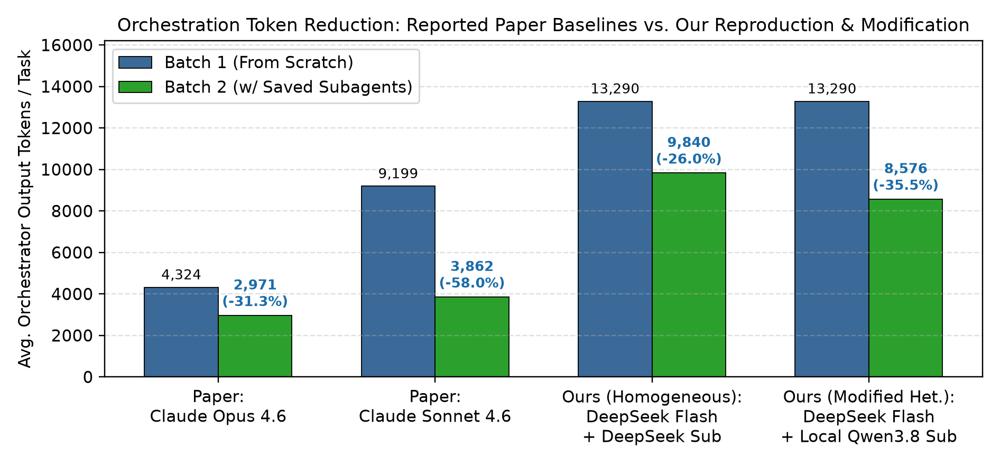
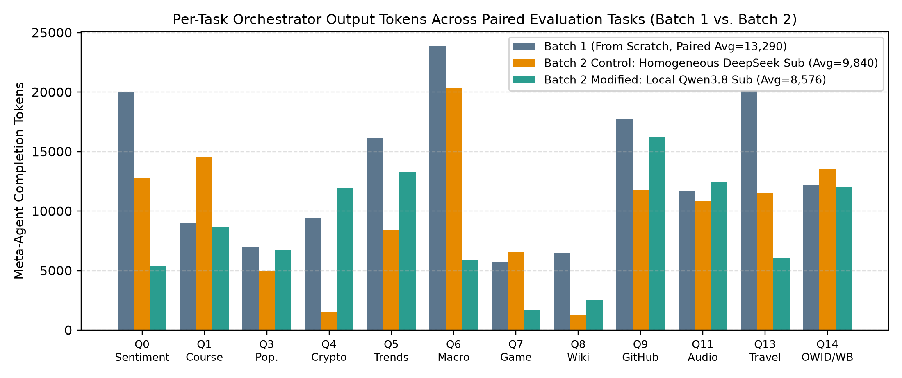
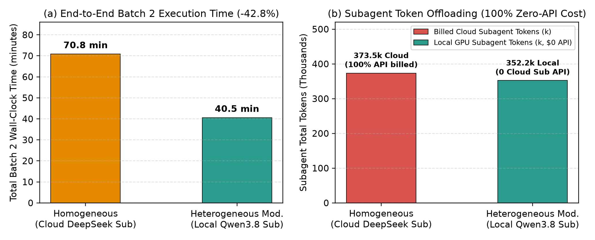
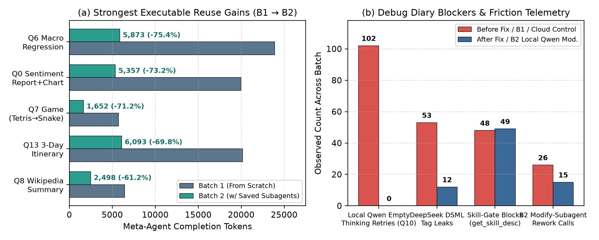
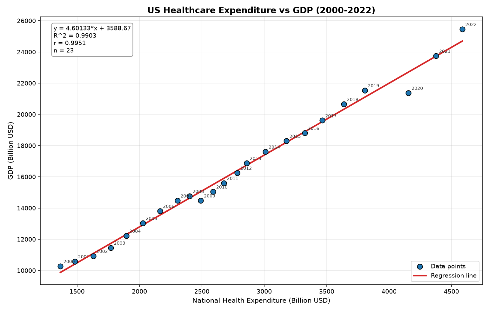
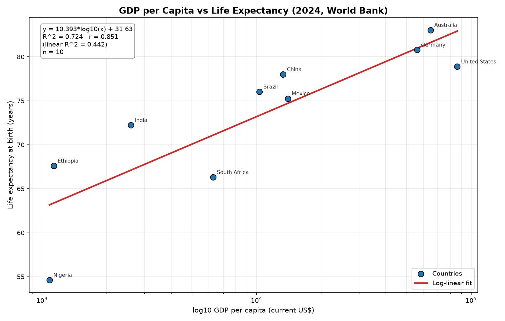

AgentFactory reproduces as a mechanism,
not as Claude token counts.
Zhang et al., ACL 2026 Demo (arXiv:2603.18000). We ran the authors’ repo. Meta = DeepSeek Flash. Modification = local Qwen 3.8 27B subagents.
Arrow keys to move · click dots · open trajectory viewer
1. Paper claim & what we reproduced
Three phases
- Install (Batch 1) — solve from scratch, persist Python +
SKILL.md - Self-evolve (Batch 2) — reuse / patch those executables
- Deploy — skills run as standalone scripts
Target
Section 5 Table 1: average meta-agent output tokens per task, excluding subagent LLM.
Paper: Opus 4,324→2,971 (−31%). Sonnet 9,199→3,862 (−58%).
Our scope
Authors’ GitHub, not a rewrite.
- All 15 Batch 1 tasks ran
- Batch 2: skip Q2 / Q10 / Q12 (Tencent login, HF JS board, QQ Music VIP)
- 12 paired tasks for every delta
- Metric instrumented in
llm.pyviaLLM_ROLE
2. Setup — Edge Case A substitutions
| Component | Paper | Ours |
|---|---|---|
| Meta-agent | Claude Opus / Sonnet 4.6 | deepseek-flash (V4.1 Flash 1017) |
| Search / fetch | Serper + Jina | DeepSeek Search + Fetch, same tool names |
| Browser | Logged-in Chrome | Headless Playwright Chromium |
| Subagent — control | Same as meta | deepseek-flash |
| Subagent — modified | — | Qwen3.8-27B-Q4_K_M local :8080 |
| Host | Cloud + desktop Chrome | Ryzen 9 9950X, 2× RTX 5070 Ti 16GB |
Comparability Absolute tokens ≠ Table 1 (tokenizer + retrieval). Deltas below are controlled: same prompts, same JSONL, same metric.
3. Table 1 direction reproduces

12 paired tasks. Homogeneous −26.0% (13,290→9,840). Heterogeneous −35.5% (13,290→8,576).
4. Reuse is uneven — clean twins collapse

Q6 −75% · Q0 −73% · Q7 Snake 1,652 tokens, create=0 · Q13 −70%. Web-shift tasks (Q1, Q4, Q5, Q9) stay expensive.
5. Isolated modification
One knob: SUBAGENT_*. Same 30-skill Batch-1 snapshot. Same 12 tasks.
Control
Meta = DeepSeek Flash
Sub = DeepSeek Flash (cloud)
Homogeneous, paper-like topology.
Modified
Meta = DeepSeek Flash
Sub = local Qwen 27B, enable_thinking=False
Offload 100% of subagent LLM. Thinking-off so 300–800 token caps are not eaten by hidden CoT.
Measurable: meta tokens, wall time, billed subagent tokens, completion rate. Not a prompt tweak.
6. Ablation: local subagents are faster, not worse

12/12 both arms. Meta tokens −12.8%. Wall time 70.8 → 40.5 min. Cloud subagent bill 373k → 0.
7. Strongest reuse + the bugs that ate tokens

Q10 thinking-retry storm: 102 empty local replies → 50 min timeout. Fix applied; Batch 2 had 0 timeouts. DSML tag leaks 53→12.
8. Live artifacts (switch folder / viewer)

B2 Q6 US health vs GDP — saved scatter_reg skill. R²=0.99

B2 Q5 Weibo top-20 — domain shift from Mastodon; still finished

B2 Q14 World Bank reuse — GDP vs life expectancy
Open trajectory viewer → Preset 2 Snake · browse all artifacts (charts, SKILL.md, Snake .py, Paris itinerary, 20s audio).
9. Why absolute tokens ≠ Table 1
- DeepSeek XML friction: 80+ skill-gate rejects; 65 DSML tag leaks.
- Tokenizer + verbosity on JSON-escaped Python.
- 30 fine-grained skills → retrieval tax; when a skill fits, tokens collapse (Q7, Q8).
- Web domain shift (Weibo, GitHub HTML, course pages).
- Host gap: no Chrome login, no ffmpeg (agent used PyAV).
temperature=1.0single trial (Q4 / Q6 flip across arms).
Honest skips, not hidden: Q2 Tencent QR, Q10 HF JS + pre-fix timeout, Q12 QQ Music VIP.
10. Takeaway
Reproduces
Executable subagent accumulation cuts orchestrator tokens. −26% homogeneous, −35% heterogeneous, same 12-task pair.
Does not
Claude-scale absolute counts. Login-walled sites. Undocumented desktop cookies / ffmpeg.
Build this way
Cloud flash model for orchestration. Local 27B, thinking off, for high-frequency subagent calls. Zero subagent API bill, −43% wall time, 12/12 kept.
Report: 05_REPRODUCIBILITY_REPORT.pdf · Script: 01_ZOOM_SPEAKER_SCRIPT.md · Questions.